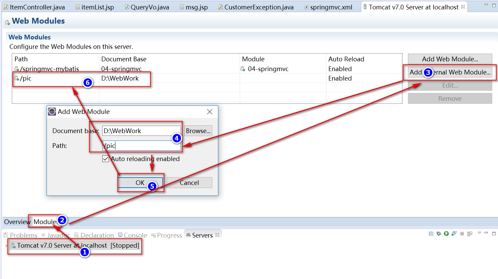

入门
创建项目
导入jar包
编写控制类TestController
public class HelloController {
("hello")
public ModelAndView hello(){
System.out.println("hello springmvc....");
//创建ModelAndView对象
ModelAndView mav = new ModelAndView();
//设置模型数据
mav.addObject("msg", "hello springmvc...");
//设置视图名字
mav.setViewName("/WEB-INF/jsp/hello.jsp");
return mav;
}
}创建hello.jsp页面
创建配置SpringMVC核心配置文件springmvc.xml
<beans xmlns="http://www.springframework.org/schema/beans"
xmlns:xsi="http://www.w3.org/2001/XMLSchema-instance" xmlns:p="http://www.springframework.org/schema/p"
xmlns:context="http://www.springframework.org/schema/context"
xmlns:mvc="http://www.springframework.org/schema/mvc"
xsi:schemaLocation="http://www.springframework.org/schema/beans http://www.springframework.org/schema/beans/spring-beans-4.0.xsd
http://www.springframework.org/schema/mvc http://www.springframework.org/schema/mvc/spring-mvc-4.0.xsd
http://www.springframework.org/schema/context http://www.springframework.org/schema/context/spring-context-4.0.xsd">
<!-- 扫描步骤3中被注解@Controller修饰的类 -->
<context:component-scan base-package="com.example.springmvc.controller" />
</beans>在web.xml中配置前端控制器
<!-- 配置前端控制器 -->
<servlet>
<servlet-name>springmvc</servlet-name>
<servlet-class>org.springframework.web.servlet.DispatcherServlet</servlet-class>
<!-- 加载springmvc核心配置文件 -->
<init-param>
<param-name>contextConfigLocation</param-name>
<param-value>classpath:springmvc.xml</param-value>
</init-param>
</servlet>
<!-- 配置拦截路径 -->
<servlet-mapping>
<servlet-name>springmvc</servlet-name>
<url-pattern>*.action</url-pattern>
</servlet-mapping>测试
SpringMVC核心类
SpringMVC工作流程
其工作流程为:
1、用户发送请求至前端控制器DispatcherServlet
2、DispatcherServlet收到请求调用HandlerMapping处理器映射器。
3、处理器映射器根据请求url找到具体的处理器，生成处理器对象及处理器拦截器(二者组成HandlerExecutionChain),并将其一并返回给DispatcherServlet。
4、DispatcherServlet通过HandlerAdapter处理器适配器调用处理器
5、执行处理器(Controller，也叫后端控制器)。
6、Controller执行完成返回ModelAndView
7、HandlerAdapter将controller执行结果ModelAndView返回给DispatcherServlet
8、DispatcherServlet将ModelAndView传给ViewReslover视图解析器
9、ViewReslover解析后返回具体View
10、DispatcherServlet对View进行渲染视图（即将模型数据填充至视图中）。
11、DispatcherServlet对用户进行响应
【参考】https://blog.csdn.net/James_shu/article/details/54616120
SpringMVC中的重要组件
一、中央控制器(DispatcherServlet)
- 中央控制器
- 作用：拦截请求
- 在web.xml中配置
<!-- 配置前端控制器 --> |
二、处理器映射器(HandlerMapping )和处理器适配器(HandlerAdapter)
接口HandlerMapping
- 处理器映射器
- 绑定url请求由哪个方法来处理，也就是说根据url可以找到处理这个请求的方法
接口HandlerAdapter
- 处理器适配器
- 负责调用url请求所对应的方法
<!-- 处理器映射器 --> |
或者
<!-- 配置注解驱动，相当于同时使用最新处理器映射器和处理器适配器，对json数据x响应提供支持 --> |
三、视图解析器(ViewResolver)
接口ViewResolver
- 视图解析器
- prefix配置路径前缀
- suffix配置路径后缀
<!-- 视图解析器 --> |
获取前端传来的参数
传统方式
默认参数，可以当作方法参数，传递到被@RequestMapping修饰的方法中
- HttpServletRequest
- HttpServletResponse
- HttpSession
/* |
SpringMVC提供的支持
1、简单参数的传递：
eg:比如请求中有参数 http://localhost:8080/demoe?id=1
（1）在方法中设置Integer id
（2）如果参数名不同，需要使用@RequestParam注解
public String itemEdit(Model model, @RequestParam(name="id",required=true,defaultValue="1")Integer num) { |
2、使用实体类来封装请求传过来的参数
其中前端传过来的数据的name要和实体类的属性名一致
public class Item { |
public String updateItem(Model model, Item item) { |
3、普通数据类型数组参数
注意 参数名（如例子中的 names） 需要与前端一致
("getArray") |
4、List参数
如果前端
5、日期参数
（1）创建转换器，需要实现Converter
import java.text.ParseException; |
（2）配置Converter
<!-- 配置注解驱动，相当于同时使用最新处理器映射器和处理器适配器，对json数据x响应提供支持 --> |
响应请求
1、直接返回ModelAndView
- 设置 数据,即addObject()方法
- 设置 视图的路径，即setViewName()方法
/** |
2、直接返回String
改造上述方法，该方式就是简化了直接返回ModelAndView
- 将返回值改为String
- 不需要使用ModelAndView.setViewName()方法，直接return视图的路径
/** |
3、请求转发
return “forward:要转发的路径”
("updateItem") |
4、请求重定向
return “redirect:重定向的路径”
注意：redirect会将request作用域的数据清除，但是会将参数加在url后面
SpringMVC中常用注解
1、@Controller
在SpringMVC 中，控制器Controller 负责处理由DispatcherServlet 分发的请求，它把用户请求的数据经过业务处理层处理之后封装成一个Model ，然后再把该Model 返回给对应的View 进行展示。
在SpringMVC 中提供了一个非常简便的定义Controller 的方法，你无需继承特定的类或实现特定的接口，只需使用@Controller 标记一个类是Controller ，然后使用@RequestMapping 和@RequestParam 等一些注解用以定义URL 请求和Controller 方法之间的映射，这样的Controller 就能被外界访问到。
此外Controller 不会直接依赖于HttpServletRequest 和HttpServletResponse 等HttpServlet 对象，它们可以通过Controller 的方法参数灵活的获取到。
@Controller 用于标记在一个类上，使用它标记的类就是一个SpringMVC Controller 对象。分发处理器将会扫描使用了该注解的类的方法，并检测该方法是否使用了@RequestMapping 注解。
@Controller 只是定义了一个控制器类，而使用@RequestMapping 注解的方法才是真正处理请求的处理器。单单使用@Controller 标记在一个类上还不能真正意义上的说它就是SpringMVC 的一个控制器类，因为这个时候Spring 还不认识它。那么要如何做Spring 才能认识它呢？这个时候就需要我们把这个控制器类交给Spring 来管理。有两种方式：
（1）在SpringMVC 的配置文件中定义MyController 的bean 对象。
（2）在SpringMVC 的配置文件中告诉Spring 该到哪里去找标记为@Controller 的Controller 控制器。
<!--方式一--> |
2、@RequestMapping
在类上
("example")
public class Controller{
("save") // 访问该方法的路径为 example/save
public String save(){
}
}value属性
指定多个匹配路径
(value= {"save","save1"})
method属性
限制提交方式，不指定时，默认接收全部提交方式
(method={RequestMethod.GET, RequestMethod.POST})
consumes
指定处理请求的提交内容类型（Content-Type），例如application/json, text/html;
produces
指定返回的内容类型，仅当request请求头中的(Accept)类型中包含该指定类型才返回；
params
指定request中必须包含某些参数值是，才让该方法处理。
headers
指定request中必须包含某些指定的header值，才能让该方法处理请求。
3、@PathVariable
用于将请求URL中的模板变量映射到功能处理方法的参数上，即取出uri模板中的变量作为参数。如：
|
详细可以参考https://blog.csdn.net/qian_ch/article/details/73826663
SpringMVC异常处理
自定义异常处理器，实现接口
public class MyExceptionResolver implements HandlerExceptionResolver {
public ModelAndView resolveException(HttpServletRequest request, HttpServletResponse response, Object handler,
Exception ex) {
ModelAndView modelAndView = new ModelAndView();
modelAndView.addObject("msg", "系统发生故障，请联系管理员");
modelAndView.setViewName("msg"); //对应 msg.jsp页面
return modelAndView;
}
}在配置文件中配置异常处理器
<!-- 配置异常处理类 -->
<bean class="MyExceptionResolver"/> <!--自定义类的全路径-->
文件上传
配置tomcat虚拟目录，也就是设置图片库的路径
方式一

方式二：在tomcat配置文件server的Host标签中添加context标签
<Context docBase="D:\pictures" path="/pic" reloadable="true" />
导入上传功能需要的jar包
- commons-fileupload-1.2.2.jar
- commons-io-2.0.1.jar
配置多媒体解析器
<!-- 配置多媒体解析器 -->
<bean id="multipartResolver" class="org.springframework.web.multipart.commons.CommonsMultipartResolver" >
<property name="defaultEncoding" value="utf-8"/>
<!--限制上传大小为100KB-->
<property name="maxUploadSize" value="102400"/>
</bean>注意id不能改，必须为multipartResolver
前端页面关于文件上传相关配置
注意：
(1)method=”POST”
(2)enctype=”multipart/form-data”
<form action="" method="POST" enctype="multipart/form-data">
<label for="file">文件</label>
<input type="file" name="uploadfile" />
<p><button type="submit">上传</button></p>
</form>编写文件上传处理代码
注意：方法需要声明参数MultipartFile uploadfile表示文件，其中uploadfile要与前端的name值相对应
(value = "uploadFile")
public String uploadFile(Model model, MultipartFile uploadfile) throws Exception {
// 文件新名字，这里使用随机数
String name = UUID.randomUUID().toString();
// 文件原名字
String oldName = uploadfile.getOriginalFilename();
// 后缀名
String exeName = oldName.substring(oldName.lastIndexOf("."));
File pic = new File("H:\\pic\\" + name + exeName);
// 保存文件到本地磁盘
uploadfile.transferTo(pic);
model.addAttribute("msg", "保存文件成功");
return "uploadFile";
}
JSON 数据
导入jar包
- jackson-annotations-2.4.0.ja
- jackson-core-2.4.2.jar
- jackson-databind-2.4.2.jar
发送json数据
使用@ResponseBody
(value="getJson")
// 使用该注解之后，直接返回实体类，不用手动生成json格式数据
public Item getJson() {
// 创建一个实体类
Item item = new Item();
item.setId(111);
item.setName("手机");
item.setPrice(1000d);
return item; // 直接返回实体对象
}结果：
{
"id": 111,
"name": "手机",
"price": 1000,
"detail": null,
"pic": null,
"createtime": null
}接收json数据
使用@RequestBody
(value="getFromClient")
public Item getFromClient(@RequestBody Item item) {
return item; // 直接返回前端发来的数据
}测试：
请求
POST /SpringMVCMybatis/getFromClient.action HTTP/1.1
HOST: localhost:8080
content-type: application/json
cookie: JSESSIONID=97E417BE428C05EDE13D011D8D77CFC6
content-length: 82
{"id":111,"name":"手机","price":1000,"detail":null,"pic":null,"createtime":null}返回结果
{"id":111,"name":"手机","price":1000.0,"detail":null,"pic":null,"createtime":null}
RESTful
/** |
拦截器
1. 自定义拦截器，实现接口org.springframework.web.servlet.HandlerInterceptor
public class MyInterceptor implements HandlerInterceptor { |
2.配置文件中配置拦截器
<!-- 拦截器 --> |